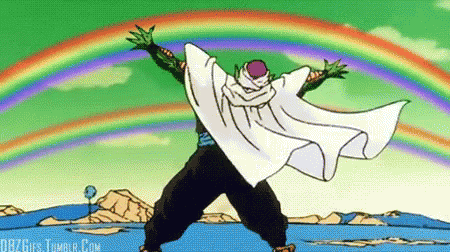

Piccolo
Piccolo (ピッコロ, Pikkoro) dit Ma Junior (魔ジュニア, Ma Junia), ou traduit maladroitement Satan Petit-Cœur dans la version française de l'anime, est l'un des personnages principaux de Dragon Ball. Il est l'enfant de Piccolo Daimaô, sa réincarnation et le rival de Son Gokû. Stratège sage et expert qui était à l'origine un ennemi implacable de Gokû, Piccolo devient plus tard un membre permanent des Z-Fighters, en particulier lorsqu'il noue un lien étroit avec le fils de Son Gokû, Son Gohan, après l'avoir formé en préparation de l'arrivée imminente des Saiyans et d'autres futures menaces.